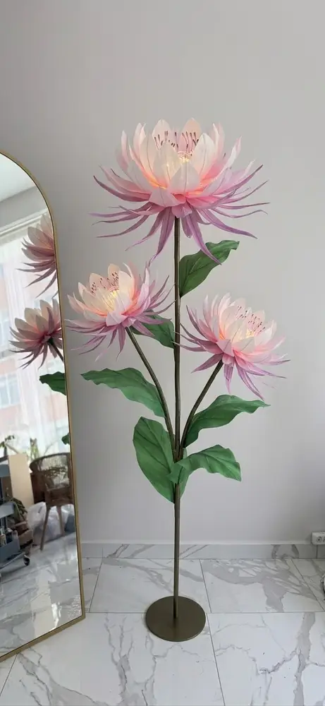

Rehber
Dev kağıt çiçek nedir, nasıl yapılır?
Dev kağıt çiçek, boyu insanı aşan ölçüde, krapon (krepon kağıdı) ile elde şekillendirilen dekoratif çiçektir. Eden Floral Art'ta krapon yanında tül ve organze de kullanılır; her yaprak elde kesilir, her çiçek atölyede tek tek hazırlanır.
Son güncelleme: · Eden Floral Art

Dev kağıt çiçek ne demek?
"Dev" çiçeğin boyutunu, "kağıt" malzemesini anlatır. Krapon, krepon kağıdıdır. Bu çiçekler canlı değildir, yani sezona bağlı kalmazlar ve istediğiniz renk ve modelde tasarlanabilirler.
Boyut tasarıma göre değişir. Her çiçek kişiye ve mekâna özel ölçülendirildiği için tek bir ölçü yoktur; boyu insanı aşan çiçekler de yapılabilir.
Atölyede nasıl hazırlanır?
Çiçekler atölyede, tek tek ve elde hazırlanır. Yapraklar elde kesilir, çiçek sabırla şekillendirilir. Üretim, tasarıma göre 1–3 hafta sürer.
Gövdeyi örneklerle anlatalım: lambader modellerimizde krepe kağıttan çiçek, esnek bir boru gövde ve demir ayaklık üzerinde durur. Tek gövdeli Polin, Freya ve Sun modellerinde çiçek çapı 55 cm, toplam boy 1,60–1,70 m'dir.
Bu sayfa adım adım bir "kendin yap" tarifi değildir; atölyede ne yaptığımızı anlatır. Kendi çiçeğinizi yapmak yerine hazırlatmak isterseniz tasarımı birlikte netleştiririz.
Hangi malzemelerle çalışıyoruz?
- Krapon (krepon kağıdı): kağıt çiçeklerin ana malzemesi. Doğrudan güneşten etkilenebilir.
- Tül: hafif, uçuşan bir kumaş. Güneşten etkilenmez.
- Organze: kumaş; ışıkla buluşan lambader ve ışıklı vitrin çiçeklerinde kullanılır. Güneşten etkilenmez.
Hangisinin nereye uygun olduğunu Kağıt çiçek mi, kumaş çiçek mi? yazısında anlattık.
Dev kağıt çiçekler nerelerde kullanılır?
- Doğum odası süsü: hastane odası kapısı için dev çiçek aranjmanı.
- Nişan, söz, kına ve düğün: flower backdrop (çiçek fon), gelin-damat yolu, takı töreni.
- Vitrin: mağaza vitrinleri ve dinlenme köşeleri.
- Organizasyon: konsepte özel dekor.
- Lambader: organze ve kağıt çiçeklerin ışıkla buluştuğu modeller.
Hazırlatmak için ne yapmalı?
Renk, tarih ve fikrinizi Instagram'dan (@eden.floralart) DM ile yazmanız yeterli. Genellikle 2–3 hafta önceden sipariş vermenizi öneriyoruz. Adımların tamamı için Atölye ve çalışma şeklimiz sayfasına bakabilirsiniz.